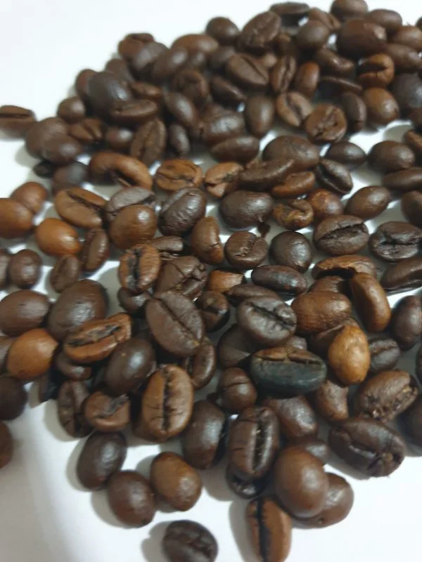

Robusta
When it comes to global production, Robusta coffee beans are second on the list and the most popular in Europe, the Middle East and Africa. Its name does this bean justice, as it is known for its strong and often harsh flavor profile. Robusta coffees have extremely high levels of caffeine, which makes the plant far more resilient than the Arabica species. That’s because the caffeine acts as natural insect repellent, eliminating a major threat to the tree. The coffee caniphora species is also particularly tolerant of its environment, so it can be grown in any number of altitudes and climates. Because of its reputation for tasting burnt or rubbery, robusta is not generally a very popular coffee commodity, except where very strong coffee is a cultural norm. However, because it’s so much easier to grow and harvest than Arabica beans, many farmers do tend to reap higher profits when they can sell Robusta. So where is it going? Robusta might be used for discount lines like instant coffees and is sometimes used as a filler in dark roasts. By using 3 parts Arabica to 1 part Robusta in a given batch, a roaster might save up to 20% on the cost of raw beans. However, if this looks to you like sacrificing product quality for the bottom line, you’d be right.
There are some instances, though, of delicious, hiqh quality Robusta coffees finding their way onto grocery store shelves. These are generally single-origin coffees made from craft, small-batch roasters. The very best Robusta coffee beans will have hints of chocolate and rum within their flavor profile, but in all reality, are not always readily available. At the end of the day, if your main interest in a cup of coffee is getting a daily dose of caffeine, you’d probably do just as well going with a standard cup of Robusta and cutting the flavor with cream and sugar. (District Roasters website)